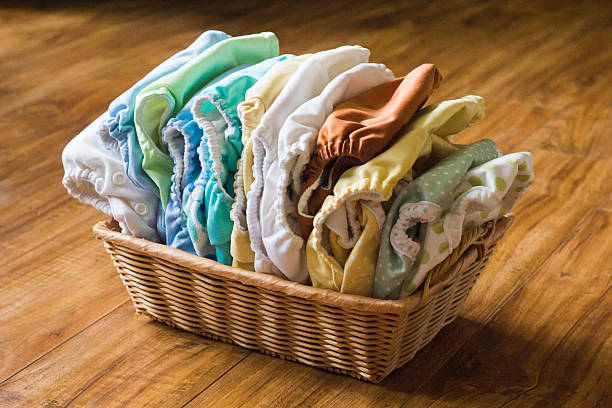

Many parents want to make eco-friendly choices, but disposable diapers generate mountains of waste and reusable options are often inconvenient to manage. Busy caregivers struggle to find a diapering solution that is both sustainable and practical—especially when juggling the many demands of parenting.
EcoDiaper promises a cleaner, greener option. We offer a reusable diaper service that takes care of the washing and delivery for you. With our service, families can enjoy the benefits of cloth diapers without the hassle—saving money, reducing waste, and making eco-conscious parenting easier than ever.
